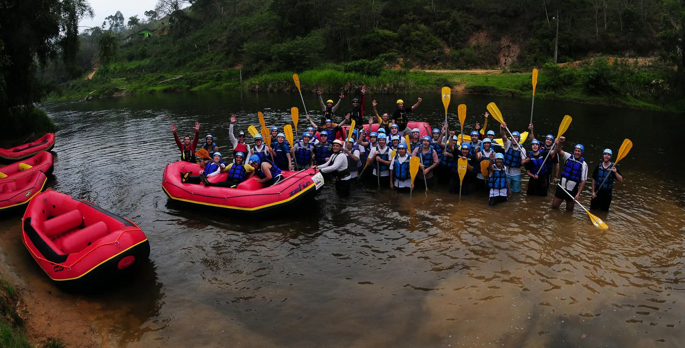
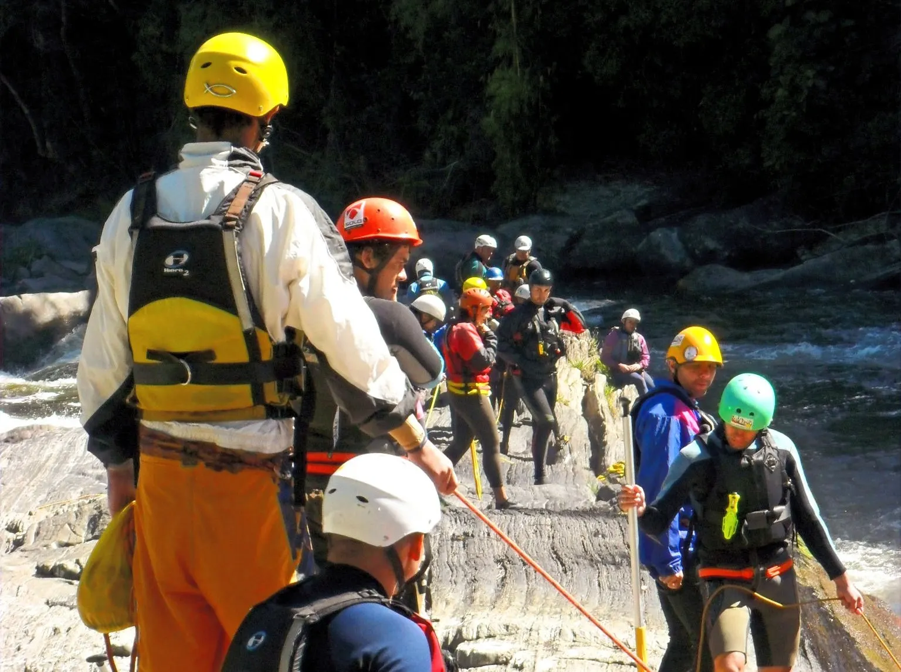
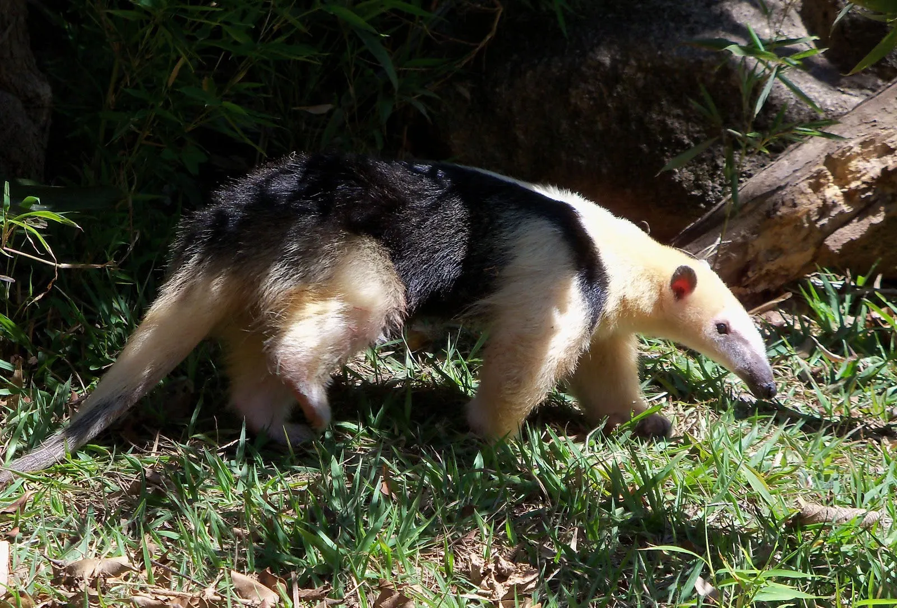
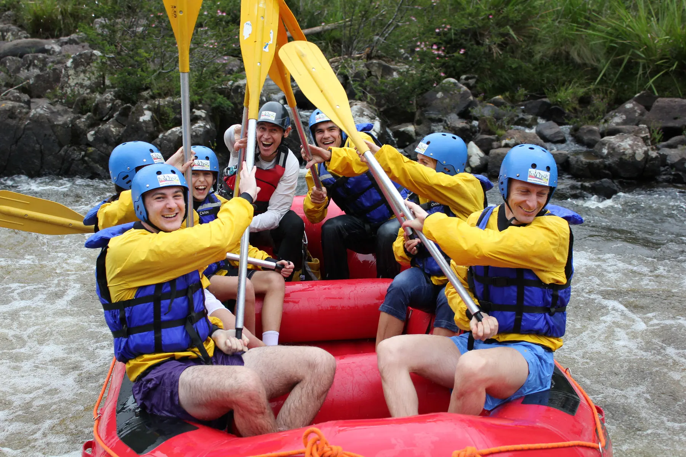

Uma das primeiras casas do rafting brasileiro.
Fundada em 1996, a Cia. de Rafting implantou as operações comerciais na Bacia do Rio Paraibuna.
Desde 1996, no mesmo rio.
A Cia. de Rafting é uma das cinco primeiras operadoras de rafting comercial do Brasil, responsável pela implantação das operações na Bacia do Rio Paraibuna, no Vale do Paraíba — entre São Luiz do Paraitinga, importante centro cultural e arquitetônico, e Natividade da Serra, a 180 km de São Paulo.
A equipe reúne formações técnicas, acadêmicas e de ensino médio, com certificação na IRF — International Rafting Federation — e nas Normas Brasileiras de Referência da ABNT. Todas as atividades seguem a legislação aplicável e as boas práticas consagradas no turismo de aventura.


O que nos conduz.
Missão
Conectar pessoas à natureza através de nossos serviços no mais alto grau de espírito de aventura.
Visão
As atividades de aventura ao ar livre estimulam mudanças fantásticas nas pessoas e no seu entorno. Por isso, é nosso dever criar os meios que possibilitem o acesso de todos a essas experiências.
Valores
Honestidade, legalidade, responsabilidade, planejamento e segurança.
Sistema de Gestão da Segurança certificado
Certificado ABNT NBR ISO 21101:2014 para a atividade de rafting no Rio Paraibuna, na zona de amortecimento do Parque Estadual da Serra do Mar — Núcleo Santa Virgínia. Certificação voluntária, válida de 08/10/2025 a 08/10/2026.

Venha remar conosco.
Duas expedições, um mesmo cuidado. Escolha o seu tempo de rio.